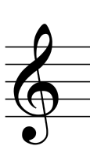
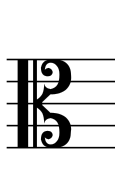
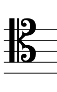
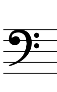

Music Theory · Chapter 2
Notation
Read the music. Hear the music. Put it into practice.
It is time to take the first practical steps in our music theory journey by learning how to read and write musical notation. Let us start by taking the piece of music we listened to back in Chapter 1 and listening to it again but this time while also looking at the notation. Here is what the music looks like:
There are lots of things going on here so let’s examine each of them one at a time. Here is the same music but with some annotations to help you understand some of the many musical ideas we can convey using notation:
| No. | Musical term | Meaning |
|---|---|---|
| 1 | Title | What the piece is called |
| 2 | Composer | Who wrote the piece |
| 3 | Tempo | How fast the piece should go |
| 4 | Time Signature | How rhythms are organized into patterns in the piece |
| 5 | Key Signature | Tells the musician which 7 notes of the 12 note musical alphabet are to be played by default. We will explore this in depth in a later chapter. |
| 6 | Treble Clef | Indicates a higher set of pitches |
| 7 | Bass Clef | Indicates a lower set of pitches |
| 8 | Accidental | Tells the musician to play 1 of the 12 notes in the musical outside the 7 default notes established by the key signature. |
| 9 | Fermata | Tells the musician to hold a sound longer than the duration indicated by the rhythm. |
| 10 | Measure Line (bar line) | Divides the music by duration (rhythm) as indicated by the time signature. |
| 11 | Repeat Sign | Tells the musician to go back and play a section of music again. |
As you can see, musical notation can be used to communicate a great amount of detail about how a piece of music should sound. This example is just scratching the surface of what is possible. There are dozens and dozens of symbols and words (in multiple languages but mostly italian) which are used in musical notation to express all kinds of details about sound. It takes many years of experience to gain a working knowledge of all these words and symbols but we are going to begin with the basics of pitch and rhythm here in this chapter.
Notating Pitch
Standard musical notation uses a five line staff as the basis of how we read music. The staff looks like this:
We then add to that staff a clef. The clef tells us which subset of notes to draw from when we are reading. Think of it this way: Imagine a grand piano with all 88 keys, here is a picture of one:
Most human voices and most musical instruments have a limit to how many notes they can play or sing at once. Some voices and/or instruments are higher and therefore need the higher notes that you see on a piano and others are lower. The clefs narrow in on which notes are needed based on how high or low your voice or instrument is to provide you a set of notes which are more natural for your voice or instrument. If we mapped that out on a piano it would look like this:
Because there are so many different voice types and instruments with so many different ranges of notes there are technically as many as 75 different clefs that are possible. However in practical usage you will find 4 of those clefs much more than the others. Those four, in order from highest to lowest are:
Treble Clef

Alto Clef

Tenor Clef

Bass Clef

Even within these four clefs some are used more than others. Treble is almost certainly the most common clef as it is used for instruments like violin, trumpet, flute, clarinet as well as soprano singers and more. The next most common clef is Bass Clef which is used for instruments like Cello, String Bass, Trombone, Tuba as well as Bass voices.
The alto and tenor clefs are what we call movable C clefs (the reason why will be made clear momentarily) and are used somewhat often but less often than treble of bass. Alto clef is used primarily for viola but also sometimes for higher pitch instruments or voices when playing or singing in a lower register. Tenor clef is not used as a primary clef for any instrument but is used as an alternative clef for instruments like cello and trombone when playing notes higher in their range.
Let us now look at each of these four main clefs and learn how to read the pitches native to each clef.
Treble Clef
Notice that each of the five lines of the treble clef staff has a letter on it and then additionally each of the spaces between the lines has a letter on it. When we read the notes on a staff we look at whether the note is centered on a line or a space between the lines and that is how we know which note it is. When we are learning the note names for a particular clef we will often use a pneumonic device to help us remember. For treble clef if you start on the bottom line and go up you will notice that the five lines of the treble clef staff are E, G, B, D and F. Two common sentences people use to remember these five notes are “Every Good Boy Does Fine” or “Every Good Boy Deserves Fudge”. The spaces of the treble clef staff spell the word FACE. If you can remember that Every Good Boy Does Fine and FACE then you can read treble clef.
Finally notice that as you progress from the bottom line up to the top passing through the spaces between each line you see the first seven letters of the english alphabet repeat themselves. We start with the bottom line E on the treble clef staff then go up to F in the space above and G in the line above that. The alphabet then starts over and we have A, B, C, etc. This pattern of the first seven notes of the English alphabet repeating is present in all the clefs. If we continue moving up or down past the lines and spaces of a clef, that pattern of the alphabet repeating continues. We show additional notes above or below a staff with a clef using something called a ledger line. Notice below that if we continue going down below the bottom line of the treble clef staff we end up with a ledger line called C. This C has extra importance and is called Middle C.
Practice drawing the treble clef several times using the stencil in the image below:
Trace the treble clef
Draw over the dotted guide with a mouse, finger, or stylus. This is freehand practice; drawings are not graded. On a small screen, use the bar below to scroll across the staff.
Bass Clef
If we follow the same pattern as we did for the treble clef starting from the bottom line you will notice the bass clef notes on the lines are G, B, D, F and A and the spaces are A, C, E and G. The sentence commonly used to remember the bass clef lines is “Good Boys Do Fine Always” and the sentence commonly used to remember the spaces is “All Cows Eat Grass”.
Practice making a bass clef using the stencil below:
Trace the bass clef
Draw over the dotted guide with a mouse, finger, or stylus. This is freehand practice; drawings are not graded. On a small screen, use the bar below to scroll across the staff.
If we continue ascending above the top line of the bass clef staff you will notice that our first ledger line is again C and this is again the special C we label as Middle C.
Now if you recall from the treble clef picture just a moment ago the bottom of the treble clef is also Middle C. Here are the two pictures, one above the other:
You may have already figured out that this means if you keep going up from the bass clef you end up in the treble clef or vice versa. It also means that we can put the two clefs together to form what we call the Grand Staff. The grand staff is what pianists read when they play their instrument and is also used in other contexts as what we call a musical score. Here is what the grand staff looks like:
As a music theory student you will use the grand staff quite a bit, particularly when you start to learn voice leading. You should practice creating a grand staff several times so you can start to get good at it.
Trace the grand staff
Draw over the dotted guide with a mouse, finger, or stylus. This is freehand practice; drawings are not graded. On a small screen, use the bar below to scroll across the staff.
Alto & Tenor Clef
Now that you know what Middle C is you will understand that when we say Alto and Tenor Clefs are movable C clefs what we mean is that they indicate where Middle C sits on the staff. The Alto and Tenor Clefs look exactly the same and are a bit more detailed than the treble and bass clefs. Take a moment to practice making them using the stencil below:
Trace the movable C clef
Draw over the dotted guide with a mouse, finger, or stylus. This is freehand practice; drawings are not graded. On a small screen, use the bar below to scroll across the staff.
Since Alto and Tenor Clef look exactly the same the only difference is which line the point on the clef sits. For Alto Clef the point sits on the third line like this:
For Tenor Clef the point sits on the fourth line like this:
Rather than use sentences to remember the notes for movable C clef, most musicians remember that the point of the clef indicates middle C and learn the other notes in relation to that. Because Alto and Tenor Clef are generally learned after you have mastered another clef, they will be easier to learn as you have absorbed the patterns of musical notation related to pitch. However as we will find with many topics in music theory, it is not so much the learning of an idea which is difficult but rather the practicing of that idea until it is fully internalized in all contexts. So for notation it is fairly easy to remember how to read the notes but what takes time is practicing reading them quickly over and over again until you can just look at a staff with a clef and instantly know all the notes without thinking. This takes lots of time and practice. Here are some ways you can practice:
Make flashcards. For the analog minded this is a very tactile way to learn your notes. Write a blank staff with a clef on one side and then choose one note to put on that staff. On the other side of the flashcard write the name of the note. Repeat this process for however many notes/clefs you are trying to learn and then quiz yourself over and over again.
Musictheory.net is a wonderful resource and contains several exercises that will help you master music theory. This includes a notation exercise generator where you can specify which notes and clefs you want to be quizzed on and then it will randomly generate those notes and you can practice.
Music theory apps. There are a number of apps available for download that can help with this kind of practice, too many to mention or review. When using an app try to find something made by a credible institution or company and/or ask someone you trust to check it out and make sure it is a good resource.
Make Music! The best way to learn music is by doing it so try playing or singing songs written in different clefs. You can simply google sheet music or use a music notation software like Musescore to create songs you like in different clefs and then practice playing them. As you progress and get better try playing or singing pieces you do not know and see if you can figure them out.
Accidentals
Accidentals alter a note’s pitch. A sharp raises a note by one half step; a flat lowers a note by one half step.
Sharp
Up one half step
Flat
Down one half step
A Quick Note on Practicing
It is important to emphasize once again that so much of music theory in terms of content is actually pretty simple to understand intellectually. That is not what makes it hard. What makes it hard is practicing it over and over again until it is fully internalized. Just like your own practicing on your instrument or voice this is something that has to be done intentionally and over a long period of time. In general it is better to have multiple practice sessions over a period of time that are shorter rather than one or two long ones and the most important factor is that the time you spend practicing is focused, quality time. If you would like more information about how to practice check out this presentation.
Rhythmic Notation
So far all the clef work we have done has dealt exclusively with the musical concept of pitch. This is vital to understand if we are to learn about melody and harmony in depth as we proceed. Rhythm however has its own set of notation which can be applied jointly with pitches in the clefs you just learned or separately in a pitchless clef which is used for percussion notation.
The nice thing about rhythmic notation is it is very logical and mathematical. All of the rhythms notated in the preceding clef pictures of this chapter were what we call whole notes. That is just a circle which is hollow in the middle. It looks like this:
It is called a whole note because in the most common time signature (4/4 time) a whole note takes up one whole measure of music. Another way of thinking of that is that in common time (4/4 time) a whole note is worth 4 beats. Most songs you have heard in your life are in common time (4/4 time) and thus in most notation a whole note is worth 4 beats, though importantly this is not always the case and as you progress in your understanding of music you will need to gain a more nuanced understanding of rhythmic notation. For now however, let us assume that a whole note simply means a sound that lasts four beats. If we want a sound that lasts half that length, two beats, we simply take a whole note and add a flag to it like this:
Here is where the logical/mathematical part comes into play. If a half note is worth two beats then logically two half notes are worth 4 beats which means also that two half notes are equivalent to one whole note. As we progress through increasingly smaller units of rhythm the mathematical combinations possible for rhythm begin to multiply.
If we continue down this path of finding half the value of a rhythm, if we want to get half the value of a half note we simply fill in the circle creating what we call a quarter note which looks like this:
Now we have more mathematical possibilities as we can have four quarter notes equal to one whole note or two quarter notes equal to one half note or two quarter notes plus one half note equal to one whole note.
Theoretically we can keep halving rhythms forever but in practice we don’t typically see a lot of rhythms shorter than a 16th note, particularly in your first few years of study. So for our purposes here we will go two more levels down beginning with half the value of a quarter note which we call an eighth note. To get an eighth note you take a quarter note and add a beam to it like this:
Usually we find multiple eighth notes together and we join the beams together to look like this:
You can see now the possible combinations of rhythms has grown considerably. You could have lots of different combinations of eighth notes, quarter notes and half notes to equal a whole note. Look at the examples below and see if you can determine which of them equal a whole note and which of them do not:
Which measures contain exactly four quarter-note beats?
Let’s go one more level smaller to what we call sixteenth notes. To turn an eighth note into a sixteenth note we simply add an additional flag to the stem like this:
Like the eighth notes above we usually see sixteenth notes in groups of 2 or 4 like this:
Now that you have learned the most common rhythmic values, here is a picture which shows all the rhythms you just learned and their proportional value to each other:
Notice in the picture above that for each of the rhythmic values the equivalent value of a rest is indicated in the column on the right. Rests tell a musician to leave a specific duration of silence in a piece of music. In other words a rest tells you to not make a sound for a specific amount of time. You can combine rests and rhythms to create a limitless number of potential rhythms.
Dotted Rhythms
The last detail of musical notation to get us started with reading music is called a dot. A dot is a rhythmic notation symbol that when added to a rhythm or rest indicates that the rhythm or rest should be 50% longer. For example, let us look at a dotted half note:
Notice it looks identical to the half note we learned earlier but with a dot added just to the right. In common time (4/4) a dotted half note sounds for 3 full beats. This is because the original half note by itself sounds for 2 beats and the dot adds half the value (50%) of the original value or 1 additional beat. So 2 beats + 1 beat = 3 beats total. This same pattern holds for all rhythms and rests.
Meter and Time Signatures
The last concept to learn in this chapter is Meter, also known as Time Signature. Meter is how we organize rhythmic patterns in music to create units of musical notation known as measures or bars. Earlier when we were learning rhythmic values you recall we assumed we were in Common Time or 4/4 time. This is an example of meter and it looks like this:
Notice that there are two numbers in a time signature (just like a fraction), one on top and one on bottom. Each of these numbers tells us something about how the music is organized and together they tell us the rhythmic duration of each measure. The top number tells us the number of beats in a measure. The bottom number tells us what type of rhythmic value receives one beat. Taking common time (4/4) as an example this means that we have 4 beats per measure and the quarter note gets the beat. Taken together this means that there are 4 quarter notes in each measure of music in 4/4 time.
Usually students learning about time signatures are pretty quick to understand the top number but the bottom number is a little more confusing so let’s think of it another way. Notice again that the two numbers of a time signature look like a fraction and let’s think in terms of fractions for a moment. If we had the fraction ¼ we will sometimes also call that a quarter because it is 25% of a whole number. In that same way when we have a bottom number that is a 4 in a time signature, that means a quarter note gets the beat. That pattern holds for all time signatures so that the bottom number corresponds to a rhythm in the following way:
| Bottom Number of Time Signature | Rhythmic Value that Gets a Beat |
|---|---|
| 1 | Whole Note |
| 2 | Half Note |
| 4 | Quarter Note |
| 8 | Eighth Note |
| 16 | Sixteenth Note |
The way to synthesize all the information into a useful sentence is to memorize this sentence frame:
In every measure there are ___________ _____________ notes.
The time signature tells you how to fill in those blanks. You simply use the top number of the time signature to fill in the first blank and the bottom number to fill in the second blank. So if we take 4/4 time as an example then we fill in the sentence as follows:
In every measure there are four quarter notes.
Practice completing the sentence for each of the following time signatures:
Check your time signatures
In every measure there are notes.
In every measure there are notes.
In every measure there are notes.
In every measure there are notes.
Now that you have learned about rhythmic values and time signatures, the way to practice all of that knowledge together is by completing the exercises below. Here you will be given an incomplete measure of music. You will need to look at the time signature and figure out how much rhythm is missing and then complete the measure with a single note. This is an excellent way to practice all your rhythms and time signatures at the same time.
Complete the measure
Choose one note to fill each blank. The note appears on the staff. Only duration is checked; pitch may vary.
View the original worksheet
Read the score
Now that you have learned how to read music let’s return to the original chorale we have been working with the last couple chapters and see if you can read the music as it passes.
See how well you are able to answer these questions:
Type a note letter A–G. Octave numbers are optional; use the written pitches shown in the score.
Practice exercise
Practice naming the notes below. Your answers and drawings stay in this page and are cleared when you reload; nothing is submitted to an instructor.
Name the note
Work through all eight rows from the original worksheet. Type A–G beneath each note; octave numbers are optional. You can also use the on-screen letter buttons.
View the original worksheet
Practice online
There is an excellent, free to use website online called musictheory.net where you can practice the topics of this chapter and more.
Open Note Identification ↗